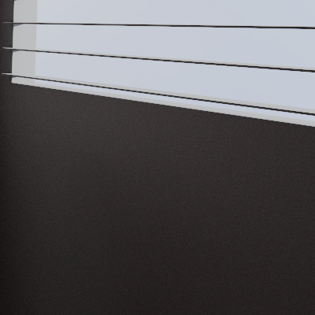
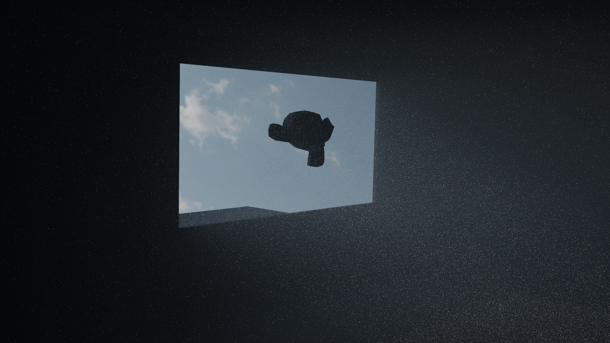
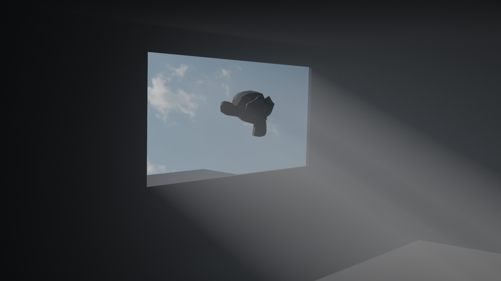

Next Event Estimation
← Back to Home
Naive Path Tracing
Naive path tracing (sometimes called brute force), is a type of path tracing, where rays shot from the camera bounce around the scene until they loose all energy, lights are discovered by pure chance, no shortcuts or approximations are used. It can compute global illumination very accurately, but I've hit a limit on this technique fairly soon in the development.
Consider what happens if I'd place sun in the scene, it's really far away, so it appears small, and it's insanely bright. Probability of rays randomly bouncing around and hitting the sun is marginal, and brightness is measured in thousands if not millions. So variance will be through the roof, and that's exactly what happens. The image below is 100K samples per pixel.

Next Event Estimation
So to reduce the amount of noise I decided to implement NEE (next event estimation), so explicitly sampling light sources at each bounce to estimate direct lighting from them. It's done by shooting a shadow ray from the surface point to a sampled light source and checking for occlusion. If surface point is unoccluded, direct lighting is estimated.
Multiple Importance Sampling
To combine current BSDF importance sampling with light sampling I implemented MIS according to Optimally Combining Sampling Techniques for Monte Carlo Rendering.
I take two samples, one from each sampling strategy:
-
BSDF / Phase function Sample
- Direction: $\omega_\text{bsdf}$
- BSDF evaluation: $f(\omega_\text{bsdf})$
- PDF evaluation: $p_\text{bsdf}(\omega_\text{bsdf})$
- Additional PDF evaluation in the direction of light: $p_\text{bsdf}(\omega_\text{light})$
-
Light Sample
- Direction: $\omega_\text{light}$
- BSDF evaluation: $f(\omega_\text{light})$
- PDF evaluation: $p_\text{light}(\omega_\text{light})$
- Additional PDF evaluation in the direction of BSDF: $p_\text{light}(\omega_\text{bsdf})$
My MIS weights are computed using power heuristic with $\beta = 2$:
$$
\begin{gather*}
w_\text{light} = \frac{p_\text{light}(\omega_\text{light})^2}{p_\text{light}(\omega_\text{light})^2 + p_\text{bsdf}(\omega_\text{light})^2}\\
w_\text{bsdf} = \frac{p_\text{bsdf}(\omega_\text{bsdf})^2}{p_\text{bsdf}(\omega_\text{bsdf})^2 + p_\text{light}(\omega_\text{bsdf})^2}
\end{gather*}
$$
Explicitly sampling lights is happening at every scattering event, be that a surface or a volume, where the weighted contribution of the sampled light is added to the emitted light.
$$
L_e = L_e + w_\text{light} \cdot \frac{f(\omega_\text{light}) \cdot \text{light}_\text{emission}}{p_\text{light}(\omega _\text{light})}
$$
When a BSDF sampled ray hits the light by chance, the contribution of the light also has to be weighted to avoid double counting. This happens in Miss.slang when ray hits the environment map. For now NEE works only for environment map, sampling mesh lights is not implemented yet.
$$
L_e = L_e + w_\text{bsdf} \cdot \text{light}_\text{emission}
$$
This approach ensures that both sampling strategies contribute appropriately while avoiding double counting.
Also, because there are volumes in the scene, transmittance must be taken into account. That is, how much light is blocked by a volume in the way.
For simple homogeneous volumes, it can be computed analytically with Beer-Lambert law: $T = e^{-\sigma_t \cdot t}$.
For heterogeneous volumes, it has to be integrated numerically with delta tracking. So when shadow ray is shot towards the light, it has to march through the volume and estimate transmittance at each step. This is done in Volume.slang based on the ratio between density at a point and a majorant.
transmittance *= 1.0f - (densityAtAPoint / majorantDensity);
Light emission is then multiplied by the transmittance before being added to the emitted light. $$ \text{light}_\text{emission}^\prime = \text{light}_\text{emission} \cdot T $$
Sampling Lights
The method of sampling the direction to the light source and evaluating it's PDF is different for every type of light source.
Environment Map
Since environment map is conceptually just a big sphere around the scene, I first tried to uniformly sample it. So direction is random vector on a sphere, and PDF is $\frac{1}{4 \pi}$.
But, uniform sampling won't make much difference, chance of sampling small bright spot on a huge 4K texture will be just as small as the chance for a ray to randomly bounce into it. It's an improvement, of course, but still not good enough. Image below has 100K samples per pixel, it has somewhat less noise than naive version, but it's still a lot of noise nonetheless. So in order to fix that, I use importance sampling. That will steer sampled directions into the brighter areas of environment map.

So to importance sample the environment map, I decided to use Alias Method. It has O(1) time complexity so it's great for performance, and it works really well. The only drawback is that it requires precomputation and some extra memory (additional 2 floats per pixel), but that's not a big deal. I create a 2D alias table for the environment map in PathTracer.cpp when scene is loaded.
Emissive Meshes
Sampling of emissive meshes is not yet supported. Only Environment Map NEE works properly.
Results
I don't think I have to point out the difference in noise. All images have 25K samples per pixel taken. First one represents naive path tracing. Second one is NEE with uniformly sampled environment map. And third one is NEE with importance sampled environment map.


If you look closely at the last image, you'll see that there are still really bright pixels spread out in the image. These are called fireflies. They appear because even with NEE, it's still possible for ray to stumble upon really bright light source by bouncing randomly in the scene. And since the emission value of those is very high, the pixel is very bright. They do not contribute much to the final image and are mostly just annoying noise, so to get rid of them I set maximum luminance value which pixel can have, and if it exceeds it, it gets scaled down. For this image max luminance I used was 20, so that it doesn't interfere with scene lighting but affects the fireflies.
float luminance = dot(pixelValue, float3(0.212671f, 0.715160f, 0.072169f));
float scale = MaxLuminance / max(luminance, MaxLuminance);
pixelValue *= scale;
Unclamped Luminance

Clamped Luminance
Scattering inside volumes also doesn't take an eternity to converge now, the only difference here is that instead of evaluating the surface BSDF, I evaluate the phase function. Both images below are 25K samples per pixels.

Naive

NEE with Importance Sampling